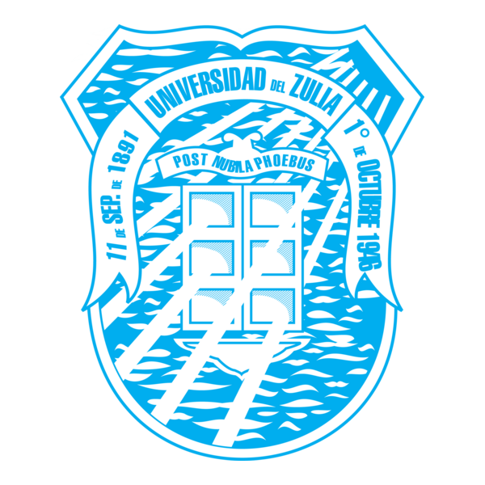
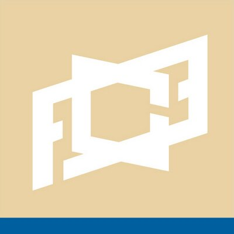

 
UNIVERSIDAD DEL ZULIA
FACULTAD EXPERIMENTAL DE CIENCIAS
LICENCIATURA EN FÍSICA
SIMULACIÓN MONTE CARLO DE LOS PROCESOS DE DEPOSICIÓN EN PELÍCULAS DELGADAS DE Cr y Fe SOBRE UN SUSTRATO SÓLIDO DE MG(001)
Autor:
Br. Ángel Chacín Ávila
Tutora:
Msc. Emily Chávez
Cotutor:
Dr. José Fermín
Maracaibo, Marzo 2026